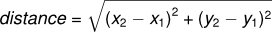

6. Fruitful functions¶
6.1. Return values¶
The built-in functions we have used, such as abs, pow, int, max, and range,
have produced results. Calling each of these functions generates a value, which
we usually assign to a variable or use as part of an expression.
We also wrote our own function to return the final amount for a compound interest calculation.
In this chapter, we are going to write more functions that return values, which we
will call fruitful functions, for want of a better name. The first example
is area, which returns the area of a circle with the given radius:
We have seen the return statement before, but in a fruitful function the
return statement includes a return value. This statement means: evaluate
the return expression, and then return it immediately as the result (the fruit)
of this function. The expression provided can be arbitrarily complicated,
so we could have written this function like this:
On the other hand, temporary variables like b above often make debugging
easier.
Sometimes it is useful to have multiple return statements, one in each branch
of a conditional. We have already seen the built-in abs, now we see how to
write our own:
Another way to write the above function is to leave out the else and just
follow the if condition by the second return statement.
Think about this version and convince yourself it works the same as the first one.
Code that appears after a return statement, or any other place the flow of
execution can never reach, is called dead code, or unreachable code.
In a fruitful function, it is a good idea to ensure that every possible path
through the program hits a return statement. The following version of
absolute_value fails to do this:
This version is not correct because if x happens to be 0, neither condition
is true, and the function ends without hitting a return statement. In this
case, the return value is a special value called None:
>>> print(bad_absolute_value(0)) None
All Python functions return None whenever they do not return another value.
It is also possible to use a return statement in the middle of a for loop,
in which case control immediately returns from the function. Let us assume that we want
a function which looks through a list of words. It should return the
first 2-letter word. If there is not one, it should return the
empty string:
Single-step through this code and convince yourself that in the first test case that we’ve provided, the function returns while processing the second element in the list: it does not have to traverse the whole list.
6.2. Program development¶
At this point, you should be able to look at complete functions and tell what they do. Also, if you have been doing the exercises, you have written some small functions. As you write larger functions, you might start to have more difficulty, especially with runtime and semantic errors.
To deal with increasingly complex programs, we are going to suggest a technique called incremental development. The goal of incremental development is to avoid long debugging sessions by adding and testing only a small amount of code at a time.
As an example, suppose we want to find the distance between two points, given by the coordinates (x1, y1) and (x2, y2). By the Pythagorean theorem, the distance is:

The first step is to consider what a distance function should look like in
Python. In other words, what are the inputs (parameters) and what is the output
(return value)?
In this case, the two points are the inputs, which we can represent using four parameters. The return value is the distance, which is a floating-point value.
Already we can write an outline of the function that captures our thinking so far:
Obviously, this version of the function doesn’t compute distances; it always returns zero. But it is syntactically correct, and it will run, which means that we can test it before we make it more complicated.
To test the new function, we call it with sample values:
>>> distance(1, 2, 4, 6) 0.0
We chose these values so that the horizontal distance equals 3 and the vertical distance equals 4; that way, the result is 5 (the hypotenuse of a 3-4-5 triangle). When testing a function, it is useful to know the right answer.
At this point we have confirmed that the function is syntactically correct, and we can start adding lines of code. After each incremental change, we test the function again. If an error occurs at any point, we know where it must be — in the last line we added.
A logical first step in the computation is to find the differences
x2- x1 and y2- y1. We will
refer to those values using temporary variables named dx and dy.
If we call the function with the arguments shown above, when the flow of execution
gets to the return statement, dx should be 3 and dy should be 4.
We can check that this is the case in PyScripter by putting the cursor on
the return statement, and running the program to break execution
when it gets to the cursor (using the F4 key).
Then we inspect the variables dx and dy by hovering the mouse above
them, to confirm that the function is getting the right parameters and performing the first
computation correctly. If not, there are only a few lines to check.
Next we compute the sum of squares of dx and dy:
Again, we could run the program at this stage and check the value of dsquared (which
should be 25).
Finally, using the fractional exponent 0.5 to find the square root,
we compute and return the result:
If that works correctly, you are done. Otherwise, you might want to inspect the
value of result before the return statement.
When you start out, you might add only a line or two of code at a time. As you gain more experience, you might find yourself writing and debugging bigger conceptual chunks. Either way, stepping through your code one line at a time and verifying that each step matches your expectations can save you a lot of debugging time. As you improve your programming skills you should find yourself managing bigger and bigger chunks: this is very similar to the way we learned to read letters, syllables, words, phrases, sentences, paragraphs, etc., or the way we learn to chunk music — from individual notes to chords, bars, phrases, and so on.
The key aspects of the process are:
- Start with a working skeleton program and make small incremental changes. At any point, if there is an error, you will know exactly where it is.
- Use temporary variables to refer to intermediate values so that you can easily inspect and check them.
- Once the program is working, relax, sit back, and play around with your options. (There is interesting research that links “playfulness” to better understanding, better learning, more enjoyment, and a more positive mindset about what you can achieve — so spend some time fiddling around!) You might want to consolidate multiple statements into one bigger compound expression, or rename the variables you’ve used, or see if you can make the function shorter. A good guideline is to aim for making code as easy as possible for others to read.
Here is another version of the function. It makes use of a square root function
that is in the math module (we’ll learn about modules shortly). Which do you
prefer? Which looks “closer” to the Pythagorean formula we started out with?
6.3. Debugging with print¶
Another powerful technique for debugging (an alternative to single-stepping and
inspection of program variables), is to insert extra print functions
in carefully selected places in your code. Then, by inspecting the output
of the program, you can check whether the algorithm is doing what you expect
it to. Be clear about the following, however:
You must have a clear solution to the problem, and must know what should happen before you can debug a program. Work on solving the problem on a piece of paper (perhaps using a flowchart to record the steps you take) before you concern yourself with writing code. Writing a program doesn’t solve the problem — it simply automates the manual steps you would take. So first make sure you have a pen-and-paper manual solution that works. Programming then is about making those manual steps happen automatically.
Do not write chatterbox functions. A chatterbox is a fruitful function that, in addition to its primary task, also asks the user for input, or prints output, when it would be more useful if it simply shut up and did its work quietly.
For example, we’ve seen built-in functions like
range,maxandabs. None of these would be useful building blocks for other programs if they prompted the user for input, or printed their results while they performed their tasks.So a good tip is to avoid calling
printandinputfunctions inside fruitful functions, unless the primary purpose of your function is to perform input and output. The one exception to this rule might be to temporarily sprinkle some calls toprintinto your code to help debug and understand what is happening when the code runs, but these will then be removed once you get things working.
6.4. Composition¶
As you should expect by now, you can call one function from within another. This ability is called composition.
As an example, we’ll write a function that takes two points, the center of the circle and a point on the perimeter, and computes the area of the circle.
Assume that the center point is stored in the variables xc and yc, and
the perimeter point is in xp and yp. The first step is to find the
radius of the circle, which is the distance between the two points.
Fortunately, we’ve just written a function, distance, that does just that,
so now all we have to do is use it:
The second step is to find the area of a circle with that radius and return it. Again we will use one of our earlier functions:
Wrapping that up in a function, we get:
We called this function area2 to distinguish it from the area function
defined earlier.
The temporary variables radius and result are useful for development,
debugging, and single-stepping through the code to inspect what is happening,
but once the program is working, we can make it more concise by
composing the function calls:
6.5. Boolean functions¶
Functions can return Boolean values, which is often convenient for hiding complicated tests inside functions. For example:
It is common to give Boolean
functions names that sound like yes/no questions. is_divisible returns
either True or False to indicate whether the x is or is not
divisible by y.
We can make the function more concise by taking advantage of the fact that the
condition of the if statement is itself a Boolean expression. We can return
it directly, avoiding the if statement altogether:
This session shows the new function in action:
>>> is_divisible(6, 4) False >>> is_divisible(6, 3) True
Boolean functions are often used in conditional statements:
It might be tempting to write something like:
but the extra comparison is unnecessary.
6.6. Programming with style¶
Readability is very important to programmers, since in practice programs are read and modified far more often then they are written. But, like most rules, we occasionally break them. Most of the code examples in this book will be consistent with the Python Enhancement Proposal 8 (PEP 8), a style guide developed by the Python community.
We’ll have more to say about style as our programs become more complex, but a few pointers will be helpful already:
- use 4 spaces (instead of tabs) for indentation
- limit line length to 78 characters
- when naming identifiers, use
CamelCasefor classes (we’ll get to those) andlowercase_with_underscoresfor functons and variables - place imports at the top of the file
- keep function definitions together
- use docstrings to document functions
- use two blank lines to separate function definitions from each other
- keep top level statements, including function calls, together at the bottom of the program
6.7. Unit testing¶
It is a common best practice in software development to include automatic unit testing of source code. Unit testing provides a way to automatically verify that individual pieces of code, such as functions, are working properly. This makes it possible to change the implementation of a function at a later time and quickly test that it still does what it was intended to do.
Some years back organizations had the view that their valuable asset was the program code and documentation. Organizations will now spend a large portion of their software budgets on crafting (and preserving) their tests.
Unit testing also forces the programmer to think about the different cases that the function needs to handle. You also only have to type the tests once into the script, rather than having to keep entering the same test data over and over as you develop your code.
Extra code in your program which is there because it makes debugging or testing easier is called scaffolding.
A collection of tests for some code is called its test suite.
There are a few different ways to do unit testing in Python — but at this stage we’re going to ignore what the Python community usually does, and we’re going to start with two functions that we’ll write ourselves. We’ll use these for writing our unit tests.
Let’s start with the absolute_value function that we wrote earlier in this
chapter. Recall that we wrote a few different versions, the last of which was
incorrect, and had a bug. Would tests have caught this bug?
First we plan our tests. We’d like to know
if the function returns the correct value when its argument is negative,
or when its argument is positive, or when its argument is zero. When
planning your tests, you’ll always want to think carefully about the “edge” cases —
here, an argument of 0 to absolute_value is on the edge of where the function
behaviour changes, and as we saw at the beginning of the chapter, it is an easy
spot for the programmer to make a mistake! So it is a good case to include in
our test suite.
We’re going to write a helper function for checking the results of one test. It takes a boolean argument and will either print a message telling us that the test passed, or it will print a message to inform us that the test failed. The first line of the body (after the function’s docstring) magically determines the line number in the script where the call was made from. This allows us to print the line number of the test, which will help when we want to identify which tests have passed or failed.
There is also some slightly tricky string formatting using the format method
which we will gloss over for the moment, and cover in detail in a future chapter.
But with this function written, we can proceed to construct our test suite:
def test_suite(): """ Run the suite of tests for code in this module (this file). """ test(absolute_value(17) == 17) test(absolute_value(-17) == 17) test(absolute_value(0) == 0) test(absolute_value(3.14) == 3.14) test(absolute_value(-3.14) == 3.14) test_suite() # Here is the call to run the tests
Here you’ll see that we’ve constructed five tests in our test suite. We could run this
against the first or second versions (the correct versions) of absolute_value,
and we’d get output similar to the following:
Test at line 25 ok. Test at line 26 ok. Test at line 27 ok. Test at line 28 ok. Test at line 29 ok.
But let’s say you change the function to an incorrect version like this:
Can you find at least two mistakes in this code? Our test suite can! We get:
Test at line 25 ok.
Test at line 26 FAILED.
Test at line 27 FAILED.
Test at line 28 ok.
Test at line 29 FAILED.
These are three examples of failing tests.
There is a built-in Python statement called assert that does almost the same as our test function (except the program stops when the first assertion fails). You may want to read about it, and use it instead of our test function.
6.8. Glossary¶
- Boolean function
- A function that returns a Boolean value. The only possible
values of the
booltype areFalseandTrue. - chatterbox function
- A function which interacts with the user (using
inputorprint) when it should not. Silent functions that just convert their input arguments into their output results are usually the most useful ones. - composition (of functions)
- Calling one function from within the body of another, or using the return value of one function as an argument to the call of another.
- dead code
- Part of a program that can never be executed, often because it appears
after a
returnstatement. - fruitful function
- A function that yields a return value instead of
None. - incremental development
- A program development plan intended to simplify debugging by adding and testing only a small amount of code at a time.
- None
- A special Python value. One use in Python is that it is returned by functions that do not execute a return statement with a return argument.
- return value
- The value provided as the result of a function call.
- scaffolding
- Code that is used during program development to assist with development and debugging. The unit test code that we added in this chapter are examples of scaffolding.
- temporary variable
- A variable used to store an intermediate value in a complex calculation.
- test suite
- A collection of tests for some code you have written.
- unit testing
- An automatic procedure used to validate that individual units of code are working properly. Having a test suite is extremely useful when somebody modifies or extends the code: it provides a safety net against going backwards by putting new bugs into previously working code. The term regression testing is often used to capture this idea that we don’t want to go backwards!
6.9. Exercises¶
All of the exercises below should be added to a single file. In that file, you should
also add the test and test_suite scaffolding functions shown above, and then,
as you work through the exercises, add the new tests to your test suite.
(If you open the online version of the textbook,
you can easily copy and paste the tests and the fragments of code into your Python editor.)
After completing each exercise, confirm that all the tests pass.
The four compass points can be abbreviated by single-letter strings as “N”, “E”, “S”, and “W”. Write a function
turn_clockwisethat takes one of these four compass points as its parameter, and returns the next compass point in the clockwise direction. Here are some tests that should pass:test(turn_clockwise("N") == "E") test(turn_clockwise("W") == "N")
You might ask “What if the argument to the function is some other value?” For all other cases, the function should return the value
None:test(turn_clockwise(42) == None) test(turn_clockwise("rubbish") == None)
Write a function
day_namethat converts an integer number 0 to 6 into the name of a day. Assume day 0 is “Sunday”. Once again, return None if the arguments to the function are not valid. Here are some tests that should pass:test(day_name(3) == "Wednesday") test(day_name(6) == "Saturday") test(day_name(42) == None)
Write the inverse function
day_numwhich is given a day name, and returns its number:test(day_num("Friday") == 5) test(day_num("Sunday") == 0) test(day_num(day_name(3)) == 3) test(day_name(day_num("Thursday")) == "Thursday")
Once again, if this function is given an invalid argument, it should return
None:test(day_num("Halloween") == None)
Write a function that helps answer questions like ‘“Today is Wednesday. I leave on holiday in 19 days time. What day will that be?”’ So the function must take a day name and a
deltaargument — the number of days to add — and should return the resulting day name:test(day_add("Monday", 4) == "Friday") test(day_add("Tuesday", 0) == "Tuesday") test(day_add("Tuesday", 14) == "Tuesday") test(day_add("Sunday", 100) == "Tuesday")
Hint: use the first two functions written above to help you write this one.
Can your
day_addfunction already work with negative deltas? For example, -1 would be yesterday, or -7 would be a week ago:test(day_add("Sunday", -1) == "Saturday") test(day_add("Sunday", -7) == "Sunday") test(day_add("Tuesday", -100) == "Sunday")
If your function already works, explain why. If it does not work, make it work.
Hint: Play with some cases of using the modulus function % (introduced at the beginning of the previous chapter). Specifically, explore what happens to
x % 7when x is negative.Write a function
days_in_monthwhich takes the name of a month, and returns the number of days in the month. Ignore leap years:test(days_in_month("February") == 28) test(days_in_month("December") == 31)
If the function is given invalid arguments, it should return
None.Write a function
to_secsthat converts hours, minutes and seconds to a total number of seconds. Here are some tests that should pass:test(to_secs(2, 30, 10) == 9010) test(to_secs(2, 0, 0) == 7200) test(to_secs(0, 2, 0) == 120) test(to_secs(0, 0, 42) == 42) test(to_secs(0, -10, 10) == -590)
Extend
to_secsso that it can cope with real values as inputs. It should always return an integer number of seconds (truncated towards zero):test(to_secs(2.5, 0, 10.71) == 9010) test(to_secs(2.433,0,0) == 8758)
Write three functions that are the “inverses” of
to_secs:hours_inreturns the whole integer number of hours represented by a total number of seconds.minutes_inreturns the whole integer number of left over minutes in a total number of seconds, once the hours have been taken out.seconds_inreturns the left over seconds represented by a total number of seconds.
You may assume that the total number of seconds passed to these functions is an integer. Here are some test cases:
test(hours_in(9010) == 2) test(minutes_in(9010) == 30) test(seconds_in(9010) == 10)
It won’t always be obvious what is wanted …
In the third case above, the requirement seems quite ambiguous and fuzzy. But the test clarifies what we actually need to do.
Unit tests often have this secondary benefit of clarifying the specifications. If you write your own test suites, consider it part of the problem-solving process as you ask questions about what you really expect to happen, and whether you’ve considered all the possible cases.
Since our book is titled How to Think Like … you might enjoy reading at least one reference about thinking, and about fun ideas like fluid intelligence, a key ingredient in problem solving. See, for example, http://psychology.about.com/od/cognitivepsychology/a/fluid-crystal.htm. Learning Computer Science requires a good mix of both fluid and crystallized kinds of intelligence.
Which of these tests fail? Explain why.
test(3 % 4 == 0) test(3 % 4 == 3) test(3 / 4 == 0) test(3 // 4 == 0) test(3+4 * 2 == 14) test(4-2+2 == 0) test(len("hello, world!") == 13)
Write a
comparefunction that returns1ifa > b,0ifa == b, and-1ifa < btest(compare(5, 4) == 1) test(compare(7, 7) == 0) test(compare(2, 3) == -1) test(compare(42, 1) == 1)
Write a function called
hypotenusethat returns the length of the hypotenuse of a right triangle given the lengths of the two legs as parameters:test(hypotenuse(3, 4) == 5.0) test(hypotenuse(12, 5) == 13.0) test(hypotenuse(24, 7) == 25.0) test(hypotenuse(9, 12) == 15.0)
Write a function
slope(x1, y1, x2, y2)that returns the slope of the line through the points (x1, y1) and (x2, y2). Be sure your implementation ofslopecan pass the following tests:test(slope(5, 3, 4, 2) == 1.0) test(slope(1, 2, 3, 2) == 0.0) test(slope(1, 2, 3, 3) == 0.5) test(slope(2, 4, 1, 2) == 2.0)
Then use a call to
slopein a new function namedintercept(x1, y1, x2, y2)that returns the y-intercept of the line through the points(x1, y1)and(x2, y2)test(intercept(1, 6, 3, 12) == 3.0) test(intercept(6, 1, 1, 6) == 7.0) test(intercept(4, 6, 12, 8) == 5.0)
Write a function called
is_even(n)that takes an integer as an argument and returnsTrueif the argument is an even number andFalseif it is odd.Add your own tests to the test suite.
Now write the function
is_odd(n)that returnsTruewhennis odd andFalseotherwise. Include unit tests for this function too.Finally, modify it so that it uses a call to
is_evento determine if its argument is an odd integer, and ensure that its test still pass.Write a function
is_factor(f, n)that passes these tests:test(is_factor(3, 12)) test(not is_factor(5, 12)) test(is_factor(7, 14)) test(not is_factor(7, 15)) test(is_factor(1, 15)) test(is_factor(15, 15)) test(not is_factor(25, 15))
An important role of unit tests is that they can also act as unambiguous “specifications” of what is expected. These test cases answer the question Do we treat 1 and 15 as factors of 15?
Write
is_multipleto satisfy these unit tests:test(is_multiple(12, 3)) test(is_multiple(12, 4)) test(not is_multiple(12, 5)) test(is_multiple(12, 6)) test(not is_multiple(12, 7))
Can you find a way to use
is_factorin your definition ofis_multiple?Write the function
f2c(t)designed to return the integer value of the nearest degree Celsius for given temperature in Fahrenheit. (hint: you may want to make use of the built-in function,round. Try printinground.__doc__in a Python shell or looking up help for theroundfunction, and experimenting with it until you are comfortable with how it works.)test(f2c(212) == 100) # Boiling point of water test(f2c(32) == 0) # Freezing point of water test(f2c(-40) == -40) # Wow, what an interesting case! test(f2c(36) == 2) test(f2c(37) == 3) test(f2c(38) == 3) test(f2c(39) == 4)
Now do the opposite: write the function
c2fwhich converts Celsius to Fahrenheit:test(c2f(0) == 32) test(c2f(100) == 212) test(c2f(-40) == -40) test(c2f(12) == 54) test(c2f(18) == 64) test(c2f(-48) == -54)